Same six. 15-2 and 0-8.
Nice Regionals, read through 3,004 open team sheets from Frankfurt, Louisville and Nice.
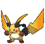
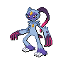
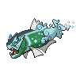
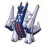
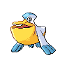
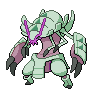
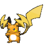
It wasn't the six. It was the Raichu.
18 players brought these six. Every one of them carried both Raichunite and Golisopite.
A week earlier, both worked
At Louisville a Raichu Y copy went 8-0 on Day 1. Then everyone saw the list.
 Choice Scarf Garchomp13 → 27%
Choice Scarf Garchomp13 → 27%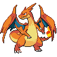
Mega Charizard Y, whole field18 → 25%Why Raichu X held
253Scarf Garchomp2× speed
Mega Evolving gives Raichu Electric Surge. The terrain pops the Seed and Unburden kicks in, so Sneasler outruns Scarf Garchomp, then Swords Dances.
No sleep
Electric Terrain stops grounded Pokémon falling asleep. In 40 engine runs it blocked Venusaur's Sleep Powder 27 times; under Raichu Y the same move put Sneasler to sleep 27 times.
Snarl-proof
Volt Tackle and Close Combat are physical, so Snarl doesn't touch them. Zap Cannon is special.
Why the female Basculegion
Day 1 match wins for teams running Pelipper rain, all three events
| Overall | 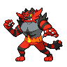 vs Intimidate | 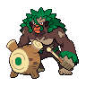 vs Rillaboom | |
|---|---|---|---|
| Female | 56.4% | 57.3% | 58.0% |
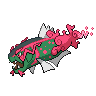 Male | 45.8% | 44.6% | 44.8% |
The female attacks specially, with Swift Swim: Intimidate can't touch it and Ice Beam hits Rillaboom super-effectively. The male is physical (Wave Crash, Last Respects), and Rillaboom resists Wave Crash. Off rain the male is fine: 51.9% as a Scarf Last Respects cleaner.
Inherited, then upgraded
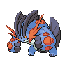
The rain core, with Mega Swampert or Floette.
+ Archaludon. Raichu X with Seed Sneasler already on 3 teams (best: 33rd).
Snarl on Archaludon, Feint on Raichu, Poison Jab on Sneasler. Raichu X teams with Snarl: 29-11. Without: 30-24.
Target on your back
The most-used Mega at Nice was the one everyone prepped for: 42% of teams had a Garchomp, and Ground blocks Zap Cannon.
Perish became a bluff
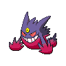
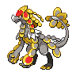
One Perish Song user61.8%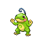
Two Perish users55.2%Nice Gengars hit hard and kept Perish as a threat. Soundproof partners: 13% → 20% → 47% of Gengar teams.
The meta in two numbers
So the field climbs toward better plans but never settles. It keeps circling. The math.
match winners called from the two team sheets alone. The pilot still decides most games.